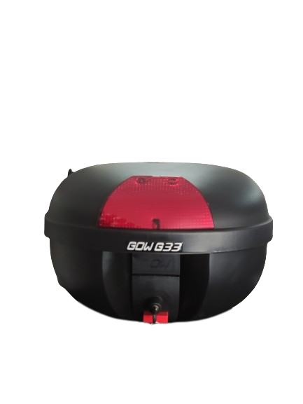
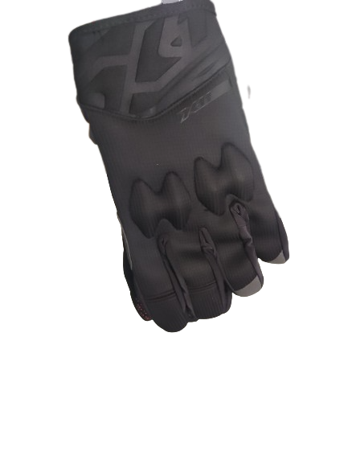

Bem-vindo à Fabricio Motos!
Somos especialistas em mecânica, manutenção e venda de peças para motocicletas. Nossa equipe altamente qualificada está pronta para atender suas necessidades com excelência. Oferecemos serviços confiáveis e uma ampla variedade de peças de reposição de alta qualidade. No momento ainda não estamos vendendo online então qualquer coisa venha nos conhecer pessoalmente e garanta o desempenho ideal da sua moto conosco.
Visite-nos hoje mesmo!!

Capacete EBF classic
O capacete EBF Classic é um modelo popular entre os motociclistas, com um design retro elegante e durável. Feito com materiais como fibra de vidro ou policarbonato, oferece proteção eficaz contra impactos. Possui viseira transparente ou colorida, sistema de ventilação eficiente e forro interno acolchoado e removível para conforto.

Capacete gow savage
O capacete Gow Savage combina estilo e resistência. Com um design robusto e durável, oferece proteção confiável para os motociclistas. Seu visual estiloso e arrojado torna-o uma escolha popular para aqueles que buscam um capacete com personalidade.

Capacete aberto new liberty coyote
O Capacete Aberto New Liberty Coyote é perfeito para quem valoriza a sensação de liberdade ao pilotar. Com um design clássico e aberto, proporciona conforto e permite uma visão ampla da estrada. É uma opção elegante e confortável para passeios urbanos.

Guidão motoboy
O guidão motoboy é propicio para aquelesque sentem dores nas costas ao pilotarem, ou trabalham muito na moto como os motoboys, esse modelo é um pouco maior que os outros aliviando o a tensão da coluna e melhorando a qualidade de vida.

Bauleto 33L
Ideal para guardar seu capacete nosso bauleto da Gow e perfeito para guardar os ses pertences em total segurança que so a gow oferece, ele vem com duas chaves e uma trava interna de da inveja na concorrencia.

Protetor de carenagem
Projetado para envolver a carenagem da sua moto, fornecendo uma camada extra de proteção. Com o nosso protetor de carenagem, você pode andar com mais tranquilidade, sabendo que a sua moto está protegida. Além de ser eficaz na proteção contra quedas e impactos, o nosso protetor de carenagem também tem um design elegante e moderno.

Luvas x11
Esta luva é construída com materiais de alta qualidade e resistentes à abrasão, com uma malha respirável que permite a ventilação adequada das mãos. A proteção de carbono na palma da mão e nos dedos fornece a proteção adicional que você precisa em caso de impacto.

KIt farol
O kit farol para moto que temos disponível em nossa loja inclui tudo o que você precisa para melhorar a iluminação da sua moto. Com dois faróis de LED ou halógenos de alta qualidade, você terá uma iluminação clara e brilhante para garantir a sua segurança durante a condução. Além disso, o kit inclui suportes de montagem e cabos de alimentação para facilitar a instalação. Você pode escolher entre diferentes acabamentos, como cromado ou preto, e diferentes padrões de iluminação, como luz alta e luz baixa.

Capacete Helt jeans
O Capacete Helt Jeans combina estilo urbano e proteção confiável. Com um visual casual e moderno, é perfeito para os motociclistas que desejam um capacete que reflita seu estilo de vida. Sua construção de alta qualidade garante segurança e conforto durante a pilotagem.

Capacete EBF EOX
O Capacete EBF EOX é projetado para aventuras off-road. Com sua estrutura robusta e recursos avançados, oferece proteção superior aos motociclistas aventureiros. Seu design versátil e resistente é perfeito para enfrentar terrenos desafiadores.

Capacete Helt punk
O Capacete Helt Punk é uma escolha ousada para os motociclistas. Com um design arrojado e distintivo, é perfeito para quem busca estilo e atitude. Além do visual marcante, oferece segurança e conforto durante a pilotagem.